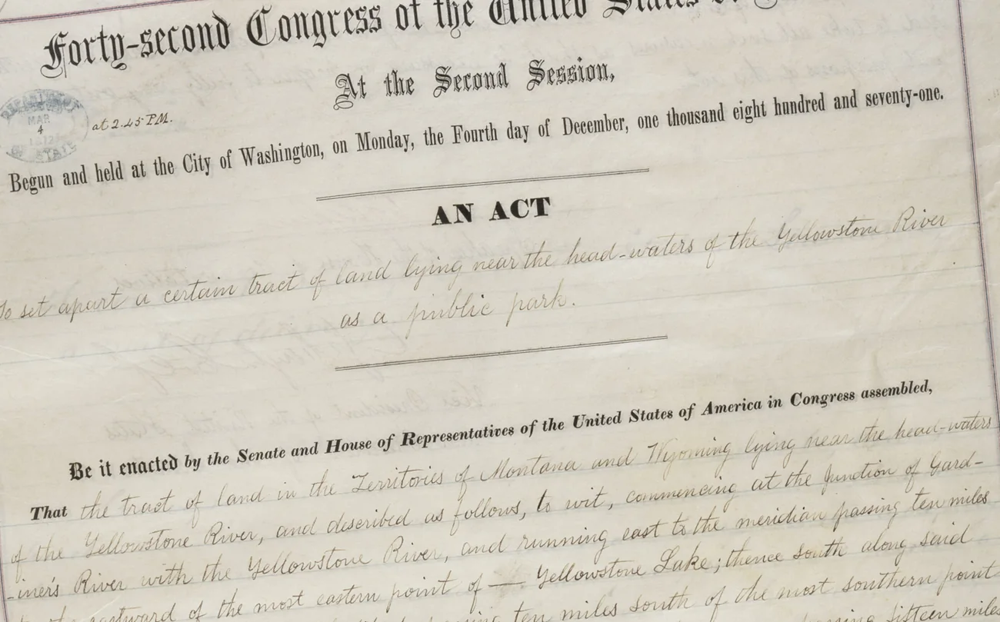

An interactive civics museum
Inside Congress.
Step inside the U.S. Capitol to discover who represents you, how a bill becomes law, and where Congress gets its power.
Washington, D.C.
2 chambers435 voting House seats100 Senate seats
Museum collection
Explore the exhibits.
Three ways to explore the
legislative branch.
 Chamber explorer
Chamber explorerRepresentation
The two chambers
See how a district and a state each get a voice in Congress.

Guided simulationLawmaking
The life of a bill
Follow a library repair bill and decide what happens when the chambers disagree.
 Illustrated guide
Illustrated guideConstitutional powers
Beyond lawmaking
Explore the power to fund agencies, investigate their work, and confirm nominees.
Collection photography courtesy of the U.S. House, National Archives, and U.S. Senate. Image credits